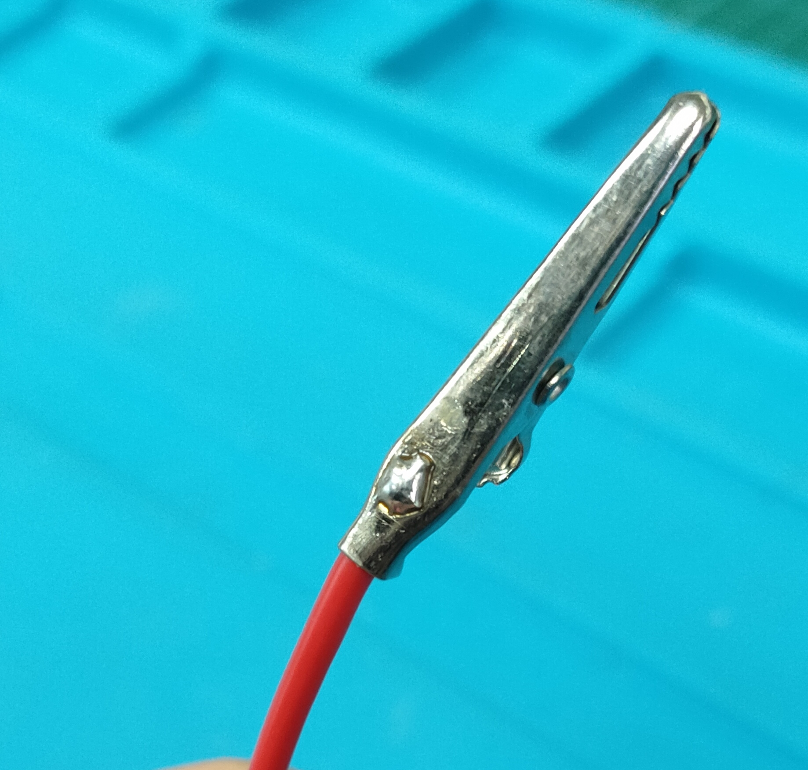
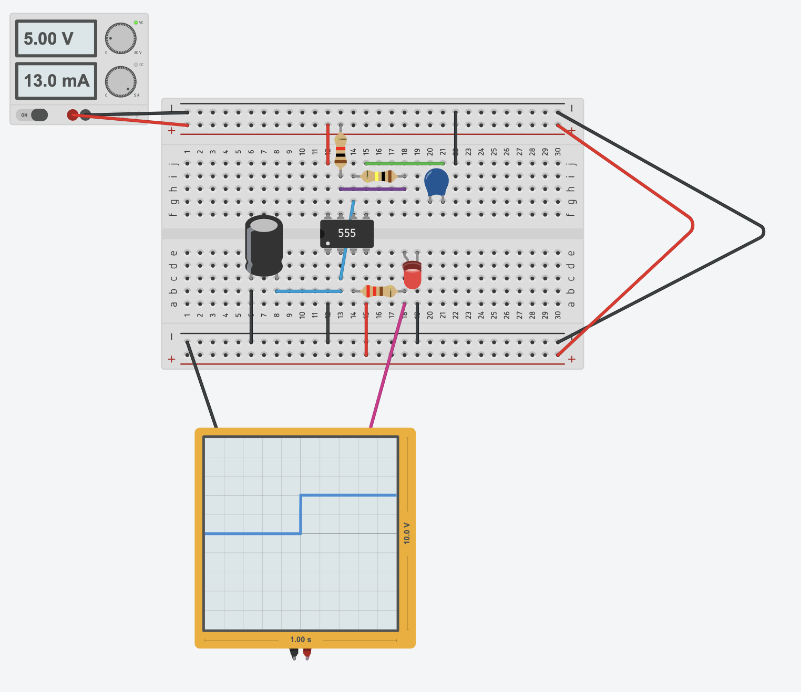
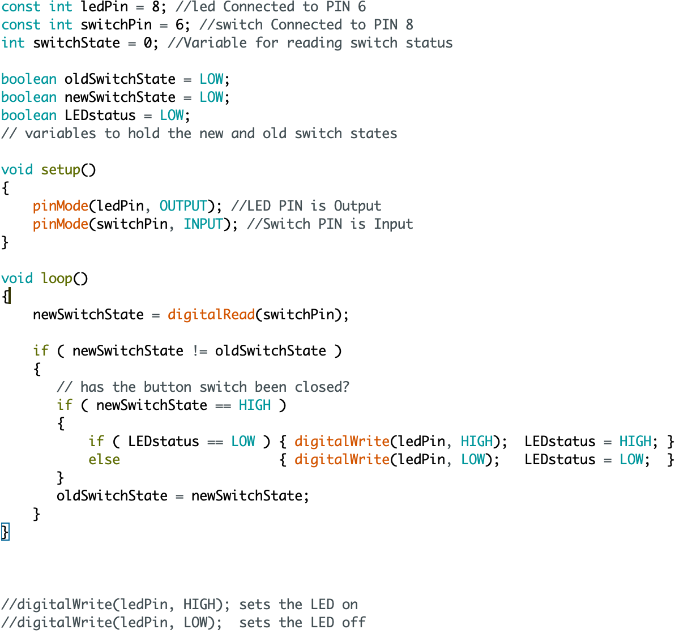
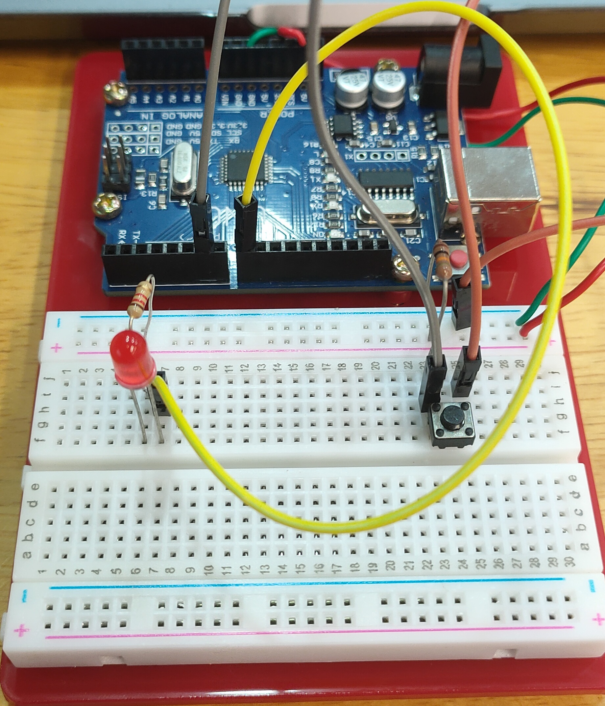

Week 12: Soldering
Thankfully, we are reaching the final end of our DFAB journey. Before we can do some circuits, we need to learn how to solder wires if we ever need to do so in the future.
Make sure to watch the following videos because soldering is a skill that requires time and effort to learn. https://youtu.be/Fp37DPZVdRI and https://youtu.be/oqV2xU1fee8 were the videos I watched.
A properly soldered wire should look like this. It is not a dry solder which means there is no lump and the soldering liquid is flat against the wire. Not only that, the solder is shiny and silvery, rather than dull and matte which usually happens in a dry solder
You can test out if the soldered works or not using a circuit below. When the wire works, the oscillator would show the lines as seen in the image.
Simple LED Control
We will write a simple LED control with a current limiting resistor of 220 ohm. The main instructions are found here
Usually, we will try the circuit setup in TinkerCAD first to see if it works or not. This is how I connected the circuit.

Next, write the code out. I used a boolean switch state so it would not keep turning off whenever I press the switch. Most of the explanation is written in the picture of the code and luckily, it works when I put it in TinkerCAD.
The final circuit if you put it in real life should look like this:
